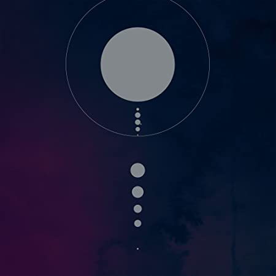

Tesseract (estilizado TesseracT) é uma banda britânica de metal progressivo,
mais precisamente do recém criado gênero de heavy metal conhecido como djent metal.
Formada em 2003, a banda TesseracT é tida como uma das precursoras e mais populares
e influentes bandas do Djent Metal.
Seu atual vocalista, Daniel Tompkins, é o vocalista que por mais tempo esteve no posto.
Seu retorno se deu após a saída do seu antecessor, Ashe O'Hara. Daniel foi
vocalista da banda Skyharbor entre os anos de 2010 e 2015, e sua saída foi motivada
pelo retorno ao Tesseract.
Daniel também já fez participação em uma regravação com o violonista Jon Gomm.

Membros
- Daniel Tompkins
- Alec Kahney
- James Monteith
- Amor Willians
- Jay Postones
Tesseract
- Daniel Tompkins
- Alec Kahney
- James Monteith
- Amor Willians
- Jay Postones